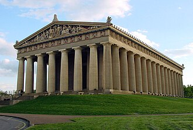

Antigua Grecia y Roma (desde el siglo V a. C. hasta el siglo V d. C.).
Usa la simetría, la proporción geométrica y las columnas (con los órdenes dórico, jónico y corintio).Ejemplo: El Partenón en Atenas.
